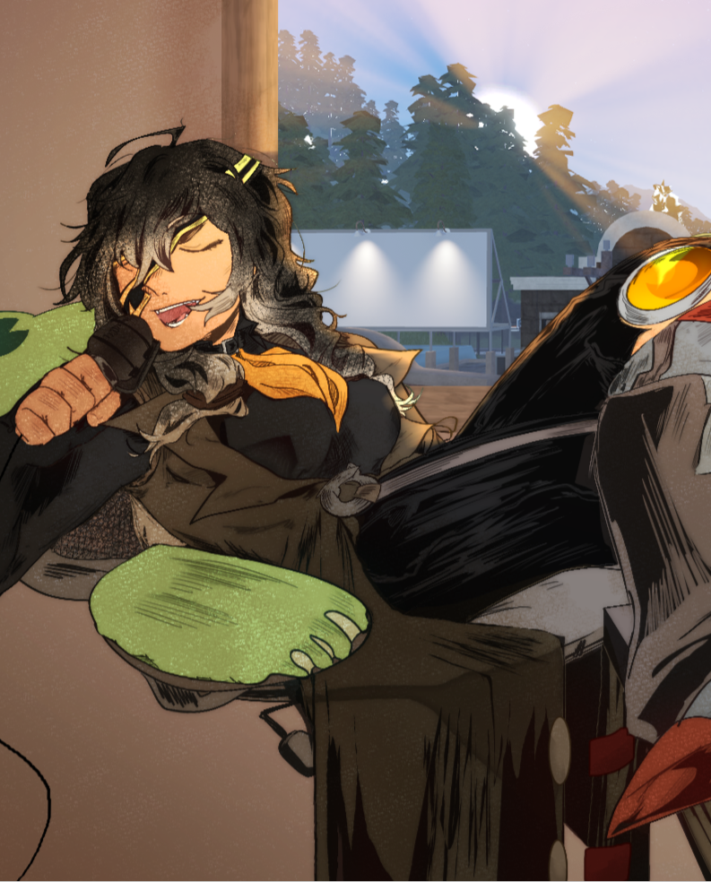
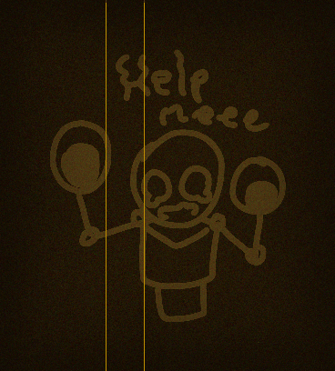

Writer, voice actor, illustrator — all one woman. The other hand: her faithful companion, Pineapple Taco, who choreographs (nearly all) the animation.

Mistress Spite — a writer, voice actor, and illustrator. I'm an enigma, if you will.
"Be well aware... The trek I take is none for the weak, for I reside in the land of the free — follow my project at your own peril."
The WorkThe project is a mixed-genre illustrated audiobook: a single ongoing story, written as often as I can manage, drawn chapter by chapter, and narrated by.. me, Mistress Spite! Every chapter contains a drawing — Lest I'm dead. But then you don't get more writing either, so let's hope for the best.
The WorldThe story is set in the 1920's with a shadow of Victorian architecture. Gas lamps flicker over cobblestones and jazz plays somewhere in a cozy establishment. Strange things are common here. Perfectly normal, frankly.
The RealityA YouTube channel, a membership, and an ongoing project I genuinely can't stop working on 
What shapes the Chronicles.
The architecture is still soundly Victorian due to my incredibly wonderful tastes. If that's what you're looking for, you've come to the right place.
Somewhere in New England — Connecticut I'd say — a town in the roaring twenties is carrying a secret. One Zane Wolfgang has been looking for, and has thus far been denied.
Every character voiced — the majority by yours truly, the remainder handled by AI due to the lack of compensation. Casting calls forthcoming, presumably.
Art produced entirely through spontaneous decisions, excruciating revision, and a frankly unreasonable amount of winging it between a week and months. Somehow comprehensible. Astounding, isn't it?